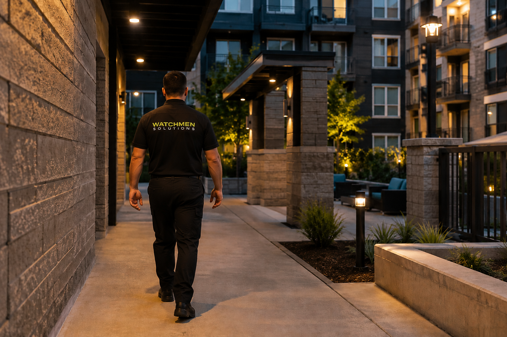

On-Foot Patrols for High-Touch Property Coverage
Visible officer presence in breezeways, stairwells, amenities, parking areas, and common spaces, supported by GPS-Verified Daily Activity Reports and disciplined after-hours communication.
On-foot patrols place professional visibility where vehicles cannot provide the same coverage. Officers move through common areas, observe conditions, communicate respectfully with residents and tenants, and document issues that require management attention.
Need location-specific implementation detail? See our Charlotte on-foot patrol page for local execution, while this service page explains the broader operating model.
- Walkthroughs of breezeways, stairwells, amenities, lobbies, and shared corridors.
- Parking-area observation with direct line-of-sight checks at access points.
- Issue identification including lighting outages, access concerns, and policy violations.
- Calm de-escalation posture and respectful interaction with residents, guests, and tenants.
- Field notes and incident documentation coordinated through dispatch channels.

Multifamily Communities
High-touch interior and exterior zones benefit from consistent walkthrough presence.
Hotels / Hospitality
Guest-facing spaces and access corridors require calm, professional visibility.
Parking Decks & Facilities
Structured parking areas and pedestrian pathways need direct observational coverage.
Office Parks
After-hours common areas and entry transitions are better supported by foot patrol rounds.
Retail / Commercial
Shared access areas, walkways, and tenant-facing corridors benefit from active presence.
Development Sites
Temporary structures, staging zones, and pedestrian routes require close-range visibility.
Documentation for Interior Foot Coverage
On-foot reporting focuses on interior visibility and resident-facing conditions. Property teams receive specific notes from the exact zones where close-range officer presence matters most.
- Walkthrough checkpoints across breezeways, stairwells, amenities, and common corridors.
- Photo-backed reporting for access-control issues, damaged fixtures, and common-area conditions.
- Incident records that capture floor/zone context, tenant-impact notes, and de-escalation steps taken.
- Shift-end summaries prioritized for resident-facing concerns and repeat nuisance activity.
- Communication trail for management teams to confirm coverage consistency in high-touch areas.

On-foot patrols bring professional presence directly into the spaces where vehicles cannot create the same visibility. Consistent walkthrough coverage improves deterrence, supports tenant confidence, and helps reduce recurring after-hours issues through calm, accountable field posture.
Mobile Vehicle Patrols
Visible exterior coverage for parking and perimeter operations.
On-Call Response
Dispatch-backed response support for alarms and after-hours incidents.
See how this service is applied in context on our Industry Coverage Hub, including apartments, construction, hospitality, retail, and HOA communities.
Request an On-Foot Patrol Coverage Plan
Share your property layout, recurring concerns, and after-hours priorities, and we can recommend a practical on-foot patrol approach for your site.